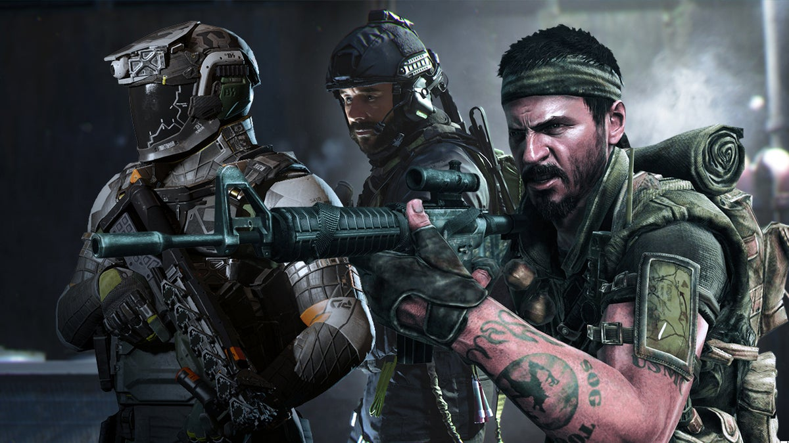
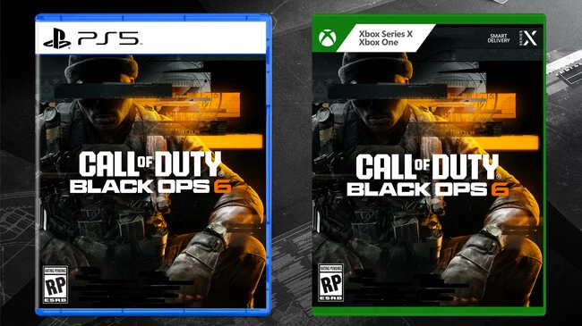

Inicio
En este sitio web, nos dedicamos a explorar la icónica franquicia de videojuegos Call of Duty, que ha dejado una huella imborrable en el género de los shooters en primera persona. Desde su lanzamiento inicial en 2003, Call of Duty ha evolucionado, introduciendo innovaciones en jugabilidad, gráficos y narrativas.
A través de este espacio, analizaremos los distintos títulos de la serie, sus modos de juego, y el impacto cultural que han tenido en la comunidad de jugadores y en la industria del videojuego. Desde sus inicios, la franquicia ha logrado captar la atención de millones de jugadores en todo el mundo.
Historia
La historia de Call of Duty se remonta a la Segunda Guerra Mundial, donde los jugadores experimentaban intensas batallas a través de la perspectiva de diferentes soldados. Con el tiempo, la franquicia se expandió a otros conflictos históricos y escenarios modernos, incluyendo la Guerra Fría y guerras futuristas.
- Call of Duty (2003)
- Call of Duty 2 (2005)
- Call of Duty 3 (2006)
- Call of Duty 4: Modern Warfare (2007)
- Call of Duty: World at War (2008)
- Call of Duty: Modern Warfare 2 (2009)
- Call of Duty: Black Ops (2010)
- Call of Duty: Modern Warfare 3 (2011)
- Call of Duty: Black Ops II (2012)
- Call of Duty: Ghosts (2013)
- Call of Duty: Advanced Warfare (2014)
- Call of Duty: Black Ops III (2015)
- Call of Duty: Infinite Warfare (2016)
- Call of Duty: Modern Warfare Remastered (2016)
- Call of Duty: WWII (2017)
- Call of Duty: Black Ops 4 (2018)
- Call of Duty: Modern Warfare (2019)
- Call of Duty: Warzone (2020)
- Call of Duty: Black Ops Cold War (2020)
- Call of Duty: Vanguard (2021)
- Call of Duty: Modern Warfare II (2022)
Desde la primera entrega, los desarrolladores han trabajado para mejorar la experiencia de juego. La inclusión de modos como el multijugador y las campañas cooperativas ha permitido que los jugadores se conecten y compitan entre sí, aumentando la popularidad de la serie.
Actualidad
Hoy en día, Call of Duty continúa siendo un pilar en la industria de los videojuegos. Con lanzamientos anuales y una base de jugadores leales, la franquicia ha sabido adaptarse a los cambios en las tendencias de juego y tecnología.

Las últimas entregas han explorado temas contemporáneos y futuros, incorporando elementos como la realidad aumentada y la inteligencia artificial, lo que promete una experiencia de juego aún más inmersiva. Además, el juego ha incursionado en plataformas móviles, ampliando su alcance.
Plataformas
Call of Duty está disponible en múltiples plataformas, incluyendo PC, PlayStation, Xbox y más recientemente, dispositivos móviles. Esta versatilidad ha permitido que una amplia variedad de jugadores pueda disfrutar de la franquicia.
Además, la opción de cross-play permite a los jugadores de diferentes plataformas competir entre sí, creando una comunidad más unida. Esta característica ha sido muy bien recibida, ya que fomenta la interacción y competencia entre los jugadores.